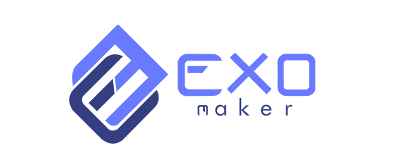
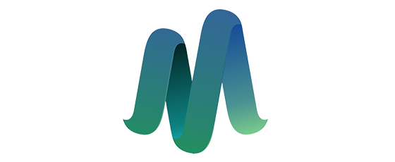
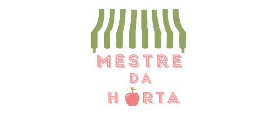
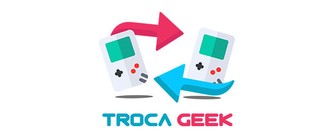
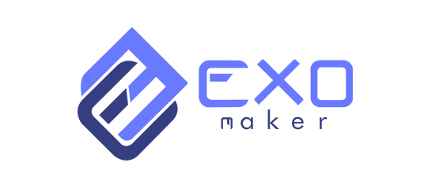
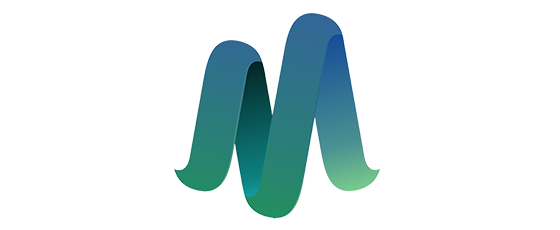
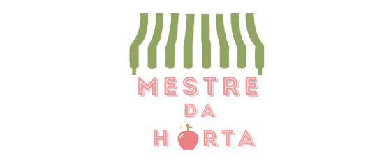
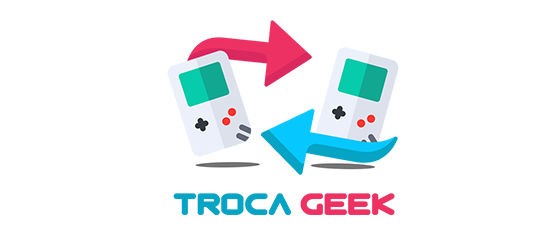

Bem vindxs!
Já pensou em ajudar quem precisa, fazer uma boa ação, e ainda ganhar
descontos nas suas lojas
favoritas? Aqui na SmartGiving é assim!
Faça já sua doação e ajude a espalhar o bem!


 






